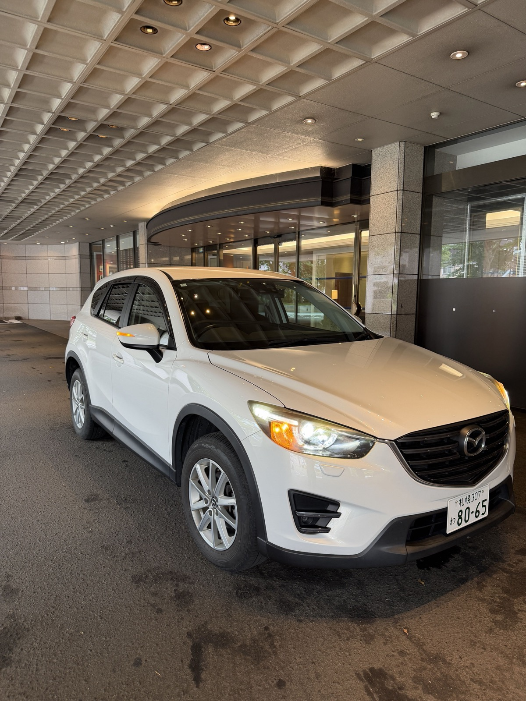
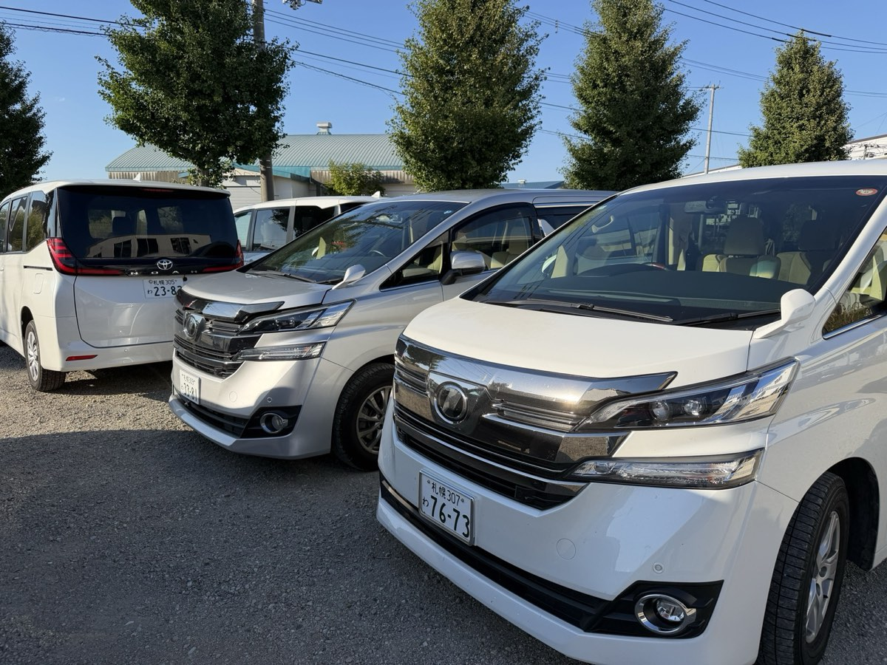
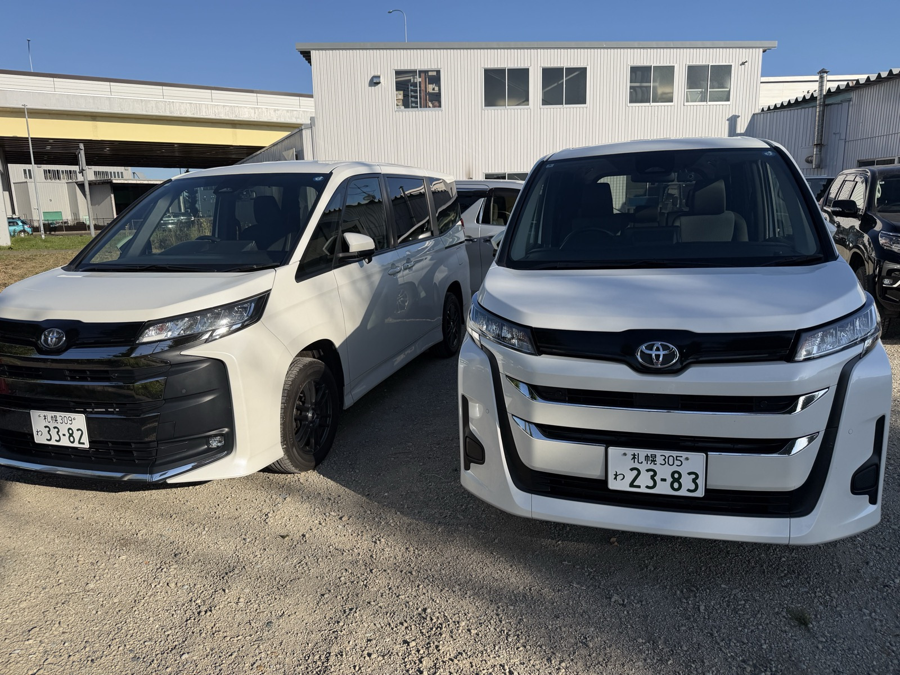
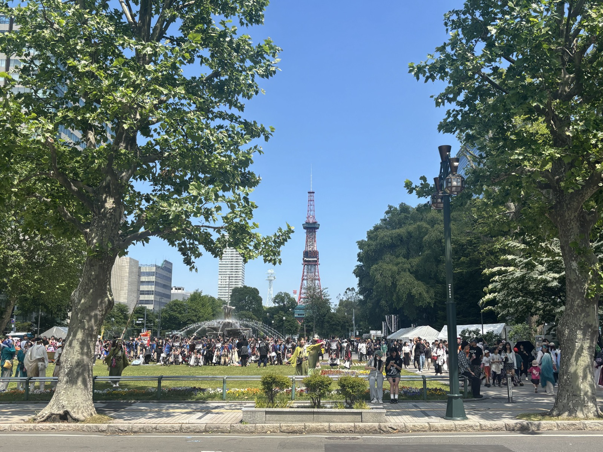
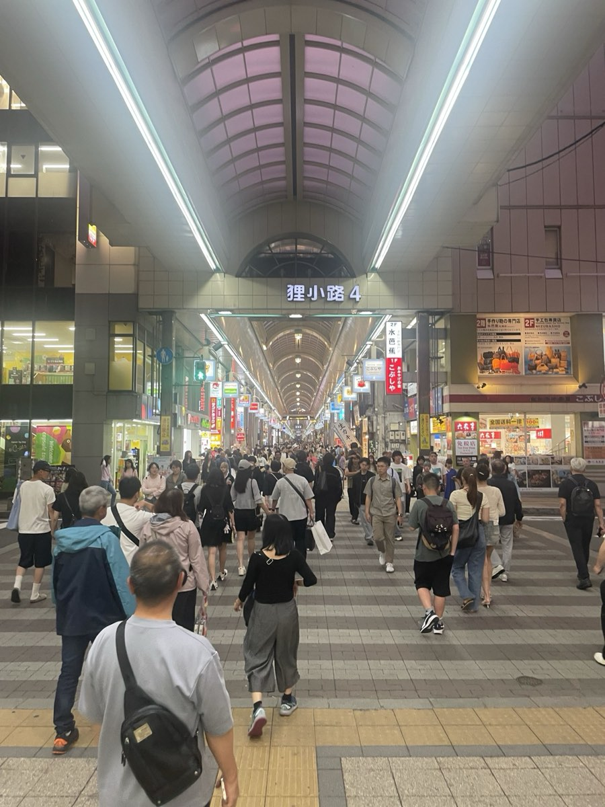
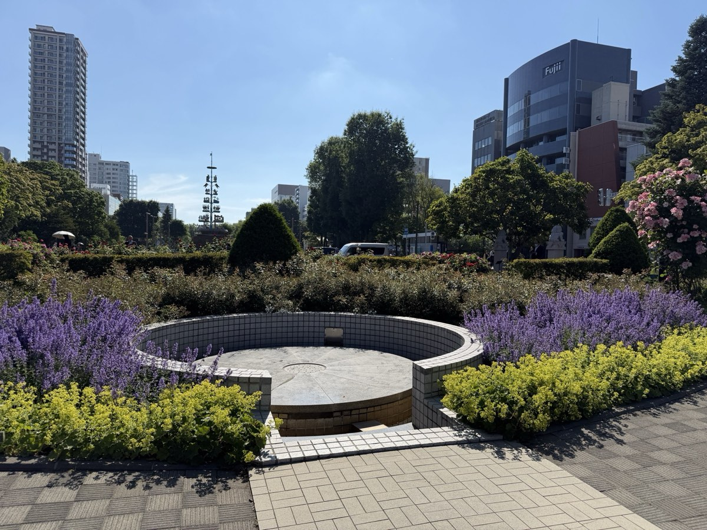

札幌のデリバリーレンタカーとは
HANDYMAN札幌は「車を借りに行く」のではなく「車が届く」レンタカーです。ご指定のホテル・ご自宅・駅までスタッフが車をお届けし、ご利用後も同じ場所（または別の指定場所）で回収します。荷物が多いご旅行、小さなお子さま連れ、チェックイン前後の移動でも、店舗までの移動時間をゼロにできます。
🏨 ホテルまで無料でお届け
すすきの・大通・札幌駅周辺のホテルへ、ご希望の時間に配車します。お届け・回収の料金はかかりません。
❄️ 全車4WD・スタッドレス
札幌店の車両は全車4WD・スタッドレスタイヤ標準。冬季の追加料金もありません。
📱 LINEで完結
お届け先・時間・免許証の登録はマイページと公式LINEで完結。当日は受け取ってすぐ出発。
🚙 コンパクトからアルファードまで
2人旅のコンパクトから、家族やグループ向けの7〜8人乗りミニバン・アルファードまで選べます。
料金表（24時間あたり）
| クラス | 車種例・定員 | 料金目安 |
|---|
| コンパクト | デミオ / ノート 等5名 | ¥6,000〜 |
| ハイトワゴン | ソリオ 等5名 | ¥6,000〜 |
| セダン | アクセラ 等5名 | ¥6,000〜 |
| コンパクトSUV | ロッキー / CX-3 等5名 | ¥7,000〜 |
| SUV | ハリアー / CX-5 等5名 | ¥9,000〜 |
| ミニバン | ノア / デリカD5 等7〜8名 | ¥11,000〜 |
| プレミアムミニバン | アルファード 等7〜8名 | ¥12,000〜 |
※ 料金は税込・24時間あたりの目安です。時期・日数により変動します。正確な料金は予約画面に表示されます。
※ 札幌市・北広島市内のお届け・回収は無料。全車ナビ・ETC車載器・Bluetooth・4WD・スタッドレスタイヤ標準装備。
※ 車種・色はお選びいただけません（同クラス内からご用意）。全車禁煙・ペット同乗不可。
補償プラン
基本補償（対人・対物無制限／車両は自己負担15万円）に加えて、免責補償 ¥1,100／24時間、免責補償＋NOC補償の安心ワイドパック ¥1,650／24時間を選べます。補償プランの詳細
お客様の声
★★★★★
デリバリーは本当に満足。行きはホテルまで届けてくれ、返却も前倒しに即対応。迷っている旅行者は本当にここ一択です。真欧 さん（Googleクチコミ）
★★★★★
デリバリーは想像以上に便利。ホテルまで時間通りに来てくれ、手続きもスムーズで出発が早い。返却の回収も助かりました。Yuta さん（Googleクチコミ）
★★★★★
希望の場所まで配車してくれて最高。手続きはネット・LINEで完結、電話不要。料金も他社より安めでした。埼玉 さん（Googleクチコミ）
Googleマップで札幌店の口コミ（★5.0・28件）をすべて見る
札幌でのお届けの様子






対応エリア
札幌市全10区と北広島市へお届け・回収します（無料）。
中央区北区東区白石区豊平区南区西区厚別区手稲区清田区北広島市
よく指定されるお届け先
札幌駅北口・大通・すすきの・中島公園周辺のホテル、丘珠空港、新札幌、円山、北広島（エスコンフィールド周辺）など。ホテルの車寄せのほか、ご自宅、駅前、コインパーキングでの受け取りもできます。エリアの可否は予約画面の地図で確認できます。
※ 新千歳空港での車の受け渡しは条例により行えません。新千歳空港から札幌でレンタカーを受け取る方法
ご利用の流れ
- ネットで予約：お届け先を地図で指定して予約します（約60秒）。
- マイページ・公式LINEで手続き：免許証の登録とお届け先・時間の確認をスマホで完結。
- 指定場所で受け取り：ホテル・自宅・駅など指定の場所へ車をお届け。すぐ出発できます。
- 指定場所で返却：ご利用後は指定の場所で回収。返却のために店舗へ戻る必要はありません。
よくある質問
札幌でホテルまで車を届けてくれるレンタカーはありますか？
はい。HANDYMAN札幌はデリバリー専門レンタカーで、札幌市内のホテル・自宅・駅までスタッフが車をお届けし、ご利用後は同じように回収します。店舗へ行く必要はありません。
デリバリー（お届け・回収）に料金はかかりますか？
札幌市・北広島市の対応エリア内であれば、お届け・回収は無料です。お支払いはレンタル料金と、選択された補償・オプションのみです。
デリバリーの対応エリアはどこまでですか？
札幌市（中央区・北区・東区・白石区・豊平区・南区・西区・厚別区・手稲区・清田区）と北広島市が対応エリアです。すすきの・大通・札幌駅周辺のホテルのほか、ご自宅や駅、コインパーキングでの受け取りもできます。詳しい可否は予約画面の地図でご確認ください。
冬でも運転できますか？4WDやスタッドレスタイヤはありますか？
札幌店の車両は全車4WD・スタッドレスタイヤを標準装備しています。冬季も追加料金なしでご利用いただけます。雪道に不慣れな方は、早めの出発と車間距離を十分にとった運転をおすすめします。
冬の札幌レンタカーガイド新千歳空港で車を受け取れますか？
空港での車の受け渡しは条例により行えません。新千歳空港からはJR快速エアポートで札幌駅まで約40分です。札幌駅周辺や市内のホテル・ご自宅など指定の場所へお届けしますので、到着後そのまま出発できます。
詳しくはこちら料金はいくらですか？
24時間あたりの目安は、コンパクト6,000円〜、コンパクトSUV7,000円〜、SUV9,000円〜、ミニバン11,000円〜、アルファードクラス12,000円〜です。時期により変動するため、正確な料金は予約画面でご確認ください。
手続きはどうやって行いますか？
ネットでご予約後、マイページと公式LINEでお届け先・時間・免許証の登録などの手続きが完結します。当日はお届け先で車を受け取ってすぐ出発できます。
補償プランはありますか？
基本補償（対人・対物無制限）に加えて、免責補償（24時間1,100円）と、免責補償＋NOC補償がセットになった安心ワイドパック（24時間1,650円）を選べます。
予約の変更やキャンセルはできますか？
ご予約後にメールでお送りするマイページから、場所・時間の変更やキャンセルのご依頼ができます。
営業時間と定休日は？
9:00〜19:00、年中無休です。お届け・回収もこの時間帯で承ります。
店舗情報
- 店名
- HANDYMAN札幌（札幌デリバリー専門店）
- 所在地
- 北海道札幌市中央区北5条西11丁目15-4 BYYARD札幌
- 電話
- 050-1724-6197
- 公式LINE
- @149ahjll（友だち追加）
- 営業時間
- 9:00〜19:00／年中無休
- サービス
- レンタカーのデリバリー（お届け・回収無料）／札幌市・北広島市